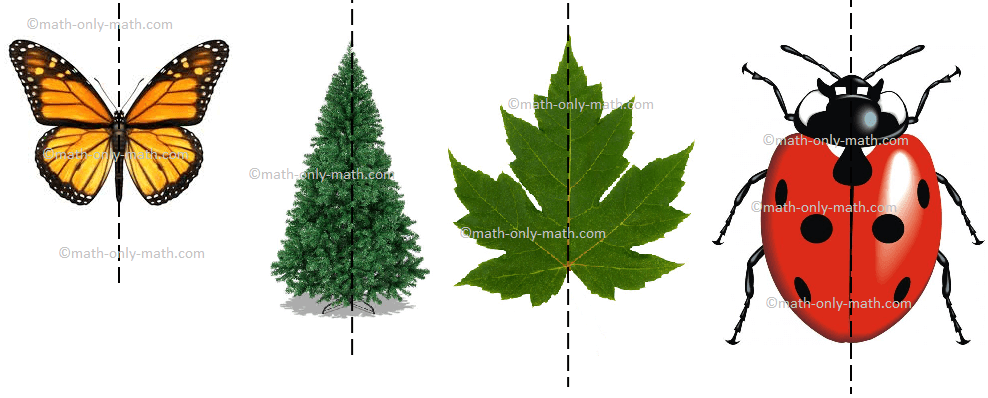
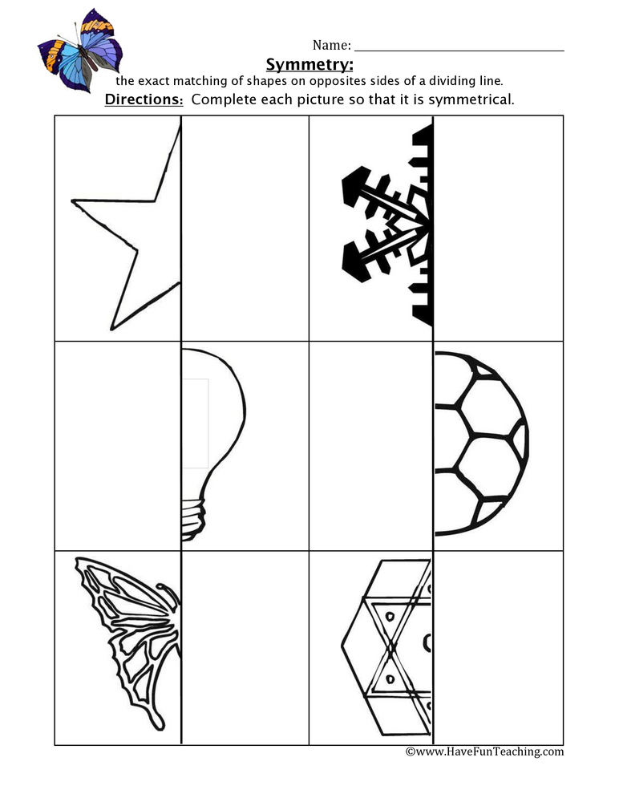

სიმეტრია
სიმეტრია არის რაიმე მთელის ნაწილების თანაზომიერი, პროპორციული განლაგება ცენტრის შუაგულის მიმართ.
თუ ფიგურა ორ ტოლ ნაწილად იყოფა ე.ი ის სიმეტრიულია
ორად გაყოფისას ერთი ნაწილი მეორეში უნდა აირეკლოს.
თუ ორად გაყოფისას ფიგურა ორ ტოლ ნაწილად არ იყოფა მაშინ ის ასიმეტრიულია

გამყოფ ხაზს ვუწოდებთ სიმეტრიის ღერძს(რის მიხედვითაც იყოფა სხეული ორ ტოლ ნაწილად). სამი სახის სიმეტრიის ღერძი არსებობს:
- ჰორიზონტალური სიმეტრიის ღერძი
- ვერტიკალური სიმეტრიის ღერძი
- დიაგონალური სიმეტრიის ღერძი
ერთ ფიგურას შეიძლება ქონდეს უამრავი სიმეტრიის ღერძი.

• სიმეტრია ბუნებაში და სამყაროში
• არსებობს გადატანითი სიმეტრია Translation symmetry
ფიგურის ვექტორული გადატანა გარკვეული მიმართულებით გულისხმობს, რომ ყველა წერტილი იმ მიმართულებით უნდა გადაადგილდეს და აისახოს მის ახალ წერტილში
• გადატანა ღერძის მიმართ (სიმეტრიული გადატანა)
• დავალებები
- 